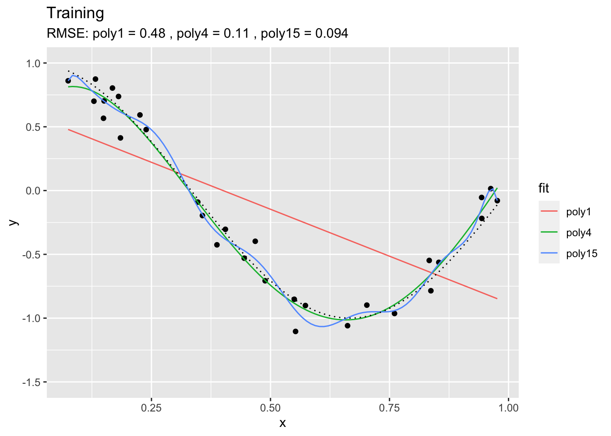
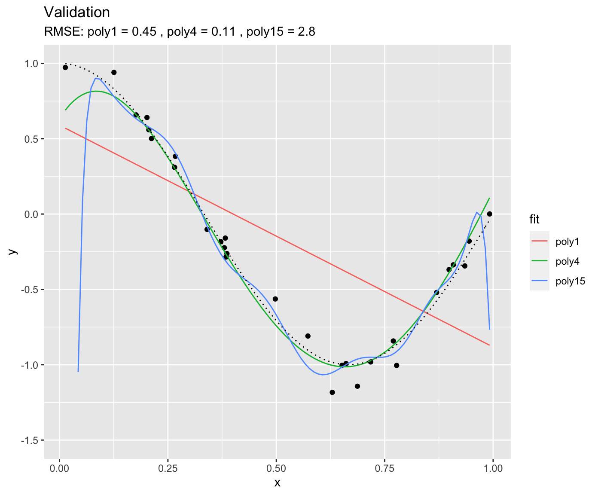
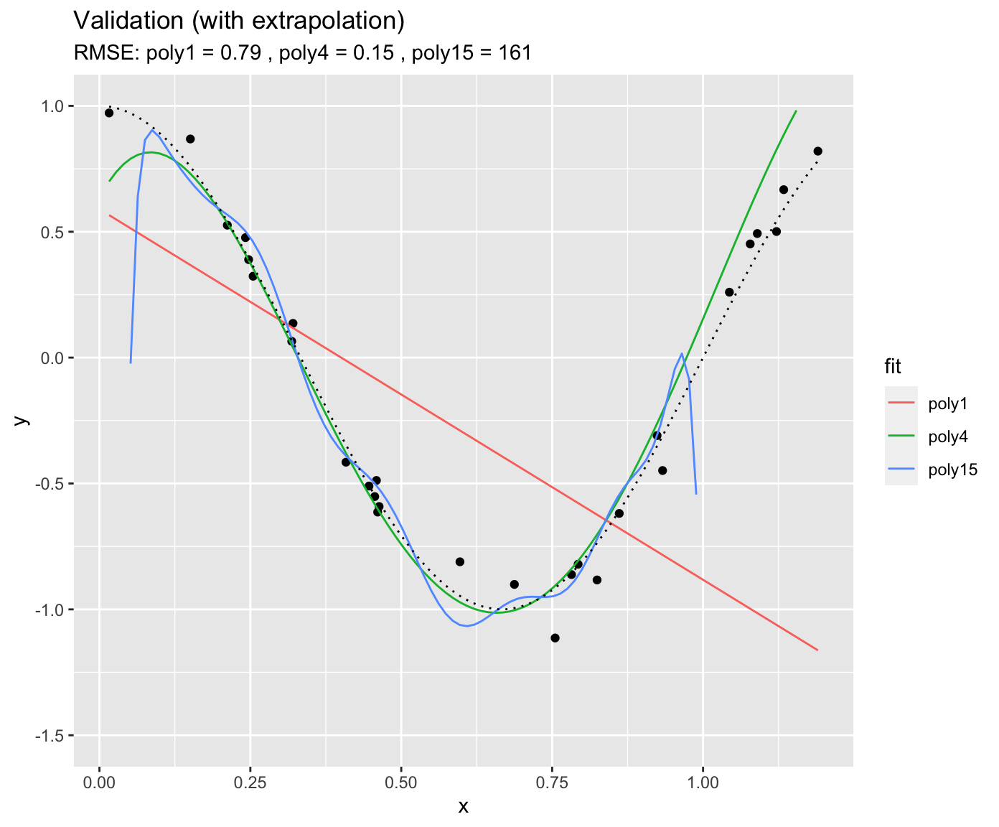

Chapter 2 Motivation
2.1 Learning objectives
After this workshop unit, you will be able to …
- Understand how overfitting models can happen and how it can be avoided.
- Implement a typical workflow using a machine learning model for a supervised regression problem.
- Evaluate the power of the model
2.2 Important points
Machine learning refers to a class of algorithms that generate statistical models of data. There are two main types of machine learning:
Unsupervised machine learning: A class of algorithms that automatically detect patterns in data without using labels or ‘learning without a teacher.’ Examples are: PCAs, k-means clustering, auto-encoders, self-organizing maps, etc.
Supervised machine learning: A class of algorithms that automatically learn an input-output relationships based on example input-output pairs. Examples include: support vector machines, random forests, decision trees, neural networks, etc. Supervised machine learning requires three ingredients: (1) Input data (2) Output data (3) A measure of model performance (a.k.a. “loss”). Supervised machine learning be used for regression (predict a continuous label) or classification (predict a categorical label).
Loss is a concept central to many supervised machine learning algorithms. It measures how well our predicted model values fit the actual observed model values, a higher value indicates a higher loss, essentially meaning the model fits less well. Ideally, loss should be minimised. Loss can be used to update our model parameters in the next iteration of model training, this is called learning.
2.3 Overfitting
This example is based on this example from scikit-learn.
Machine learning (ML) may appear magical. The ability of ML algorithms to detect patterns and make predictions is fascinating. However, several challenges have to be met in the process of formulating, training, and evaluating the models. In this practical we will discuss some basics of supervised ML and how to achieve best predictive results.
In general, the aim of supervised ML is to find a model \(\hat{Y} = f(X)\) that is trained (calibrated) using observed relationships between a set of features (also known as predictors, or labels, or independent variables) \(X\) and the target variable \(Y\). Note, that \(Y\) is observed. The hat on \(\hat{Y}\) denotes an estimate. Some algorithms can even handle predictions of multiple target variables simultaneously (e.g., neural networks). ML algorithms consist of (more or less) flexible mathematical models with a certain structure and set of parameters. At the simple extreme end of the model spectrum is the univariate linear regression. You may not want to call this a ML algorithm because there is no iterative learning involved. Nevertheless, also univariate linear regression provides a prediction \(\hat{Y} = f(X)\), just like other (proper) ML algorithms do. The functional form of a linear regression is not particularly flexible (just a straight line for the best fit between predictors and targets) and it has only two parameters (slope and intercept). At the other extreme end are, for example, deep neural networks. They are extremely flexible, can learn highly non-linear relationships and deal with interactions between a large number of predictors. They also contain very large numbers of parameters, typically on the order of thousands. You can imagine that this allows these types of algorithms to very effectively learn from the data, but also bears the risk of overfitting.
What is overfitting? The following example illustrates it. Let’s assume that there is some true underlying relationship between a predictor \(x\) and the target variable \(y\). We don’t know this relationship (in the code below, this is true_fun()) and the observations contain a (normally distributed) error (y = true_fun(x) + 0.1 * rnorm(n_samples)). Based on our training data (df_train), we fit three polynomial models of degree 1, 4, and 15 to the observations. A polynomial of degree N is given by: \[
y = \sum_{n=0}^N a_n x^n
\] \(a_n\) are the coefficients, i.e., model parameters. The goal of the training is to get the coefficients \(a_n\). From the above definition, the polynomial of degree 15 has 16 parameters, while the polynomial of degree 1 has two parameters (and corresponds to a simple linear regression). You can imagine that the polynomial of degree 15 is much more flexible and should thus yield the closest fit to the training data. This is indeed the case.

We can use the same fitted models on unseen data - the validation data. This is what’s done below. Again, the same true underlying relationship is used, but we sample a new set of data points in x and add a new sample of errors on top of the true relationship.

You see that, using the validation set, we find that “poly4” actually performs the best - it has a much lower RMSE that “poly15.” Apparently, “poly15” was overfitted. Apparently, it indeed used its flexibility to fit not only the shape of the true underlying relationship, but also the observation errors on top of it. This has obviously the implication that, when this model is used to make predictions for data that was not used for training (calibration), it will yield misguided predictions that are affected by the errors in the training set. In the above pictures we can also conclude that “poly1” was underfitted.
It gets even worse when applying the fitted polynomial models to data that extends beyond the range in \(x\) that was used for model training. Here, we’re extending just 20% to the right.

You see that the RMSE for “poly15” literally explodes. The model is hopelessly overfitted and completely useless for prediction, although it looked like it fit the data best when we considered at the training results. This is a fundamental challenge in ML - finding the model with the best generalisability. That is, a model that not only fits the training data well, but also performs well on unseen data.
The phenomenon of fitting/overfitting as a function of the model “flexibility” is also referred to as bias vs. variance trade-off. The bias describes how well a model matches the training set (average error). A model with low bias will match the data set closely and vice versa. The variance describes how much a model changes when you train it using different portions of your data set. “poly15” has a high variance, but much of its variance is the result of misled training on observation errors. On the other extreme, “poly1” has a high bias. It’s not affected by the noise in observations, but its predictions are also far off the observations. In ML, we are challenged to balance this trade-off. In Figure ?? you can see a schematic illustration of the bias–variance trade-off.
This chapter introduces the methods to achieve the best model generalisability and find the sweet spot between high bias and high variance. The steps to get there include the preprocessing of data, splitting the data into training and testing sets, and model training that “steers” the model towards what is considered a good model fit in terms of its generalisation power.
You have learned in video 6a about the basic setup of supervised ML, with input data containing the features (or predictors) \(X\), predicted (\(\hat{Y}\)) and observed target values (\(Y\), also known as labels). In video 6b (title 6c: loss and it’s minimization), you learned about the loss function which quantifies the agreement between \(Y\) and \(\hat{Y}\) and defines the objective of the model training. Here, you’ll learn how all of this can be implemented in R. Depending on your application or research question, it may also be of interest to evaluate the relationships embodied in \(f(X)\) or to quantify the importance of different predictors in our model. This is referred to as model interpretation and is introduced in the respectively named subsection. Finally, we’ll get into feature selection in the next Application session.
The topic of supervised machine learning methods covers enough material to fill two sessions. Therefore, we split this part in two. Model training, implementing the an entire modelling workflow, model evaluation and interpretation will be covered in the next session’s tutorial (Supervised Machine Learning Methods II).
Of course, a plethora of algorithms exist that do the job of \(Y = f(X)\). Each of them has its own strengths and limitations. It is beyond the scope of this course to introduce a larger number of ML algorithms. Subsequent sessions will focus primarily on Artificial Neural Networks (ANN) - a type of ML algorithm that has gained popularity for its capacity to efficiently learn patterns in large data sets. For illustration purposes in this and the next chapter, we will briefly introduce two simple alternative “ML” methods, linear regression and K-nearest-neighbors. They have quite different characteristics and are therefore great for illustration purposes in this chapter.
2.4 Our modelling task
xxxx
Building a ML model is an iterative process and it is typically not possible to know which ML algorithm will perform best when you start with the process. It is also essential that you understand your data in order to apply appropriate pre-processing steps, splitting your data wisely into training and testing sets, building a robust model, and achieving an informative model evaluation. This workshop introduces essential methods of the modelling process that allow you to walk a safe (and hopefully still spectacular) path. This workshop is inspired by the fantastic tutorial Hands On Machine Learning in R by Boehmke & Gladwell.
xxx
2.5 Motivation
Ecosystem-atmosphere exchange fluxes of water vapour and CO2 are continuously measured at several hundred of sites, distributed across the globe. The oldest running sites have been recording data since over twenty years. Thanks to the international FLUXNET initiative, these time series data are made openly accessible from over hundred sites and provided in a standardized format and complemented with measurements of several meteorological variables, plus soil temperature and moisture, measured in parallel. These data provide an opportunity for understanding ecosystem fluxes and how they are affected by environmental covariates. The challenge is to build models that are sufficiently generalisable in space. That is, temporally resolved relationships learned from one subset of sites should be used effectively to predict time series, given environmental covariates, at new sites (spatial upscaling). This is a challenge as previous research has shown that relatively powerful site-specific models can be trained, but predictions to new sites have been found wanting. This may be due to site-specific characteristics (e.g. vegetation type) that have thus far not been satisfactorily encoded in models. In other words, factors that would typically be regarded as random factors in mixed effects modelling, continue to undermine effective learning in machine learning models.
2.6 Data
Data is provided here at daily resolution from a selection of sites (\(N=71\), 265,177 data points, see prepare_data.Rmd), and paired with satellite data of the fraction of absorbed photosynthetically active radiation (fAPAR, product MODIS FPAR). This provides crucial complimentary information about vegetation structure and seasonally varying green foliage cover, responsible for photosynthesis and transpiration. The target variable is ecosystem photosynthesis, referred to as gross primary production (variable GPP_NT_VUT_REF). Available covariates are briefly described below. For more information, see FLUXNET 2015 website, and Pastorello et al., 2020, and the document variable_codes_FULLSET_20160711.pdf provided in this repository.
The data is provided through this repository (data/ddf_combined_mlflx.csv).
2.6.1 Available variables
sitename: FLUXNET standard site namedatefpar_loess: fraction of absorbed photosynthetically active radiation, interpolated to daily values using LOESS.fpar_linear: fraction of absorbed photosynthetically active radiation, linearly interpolated to daily valuesTA_F: Air temperature. The meaning of suffix_Fis described in Pastorello et al., 2020.SW_IN_F: Shortwave incoming radiationLW_IN_F: Longwave incoming radiationVPD_F: Vapour pressure deficit (relates to the humidity of the air)PA_F: Atmospheric pressureP_F: PrecipitationWS_F: Wind speedUSTAR: A measure for atmospheric stabilityCO2_F_MDS: CO2 concentrationGPP_NT_VUT_REF: Gross primary production - the target variableNEE_VUT_REF_QC: Quality control information forGPP_NT_VUT_REF. Specifies the fraction of high-quality underlying high-frequency data from which the daily data is derived. 0.8 = 80% underlying high-quality data, remaining 20% of the high-frequency data is gap-filled.SWC_F_MDS_*: Soil water content. The number provides information about the soil layer, counting from the topwscal: Water scalar. 0 = dry, at 100% water holding capacity of the soil; 1 = wet, at 100% water holding capacity of the soil
The following variables are provided in the dataset as well and are site-specific meta data, taken from Falge et al.
lon,lat: Longitude and latitude (decimal degrees)elv: Elevation (m above sea level)classid: Vegetation type. Has the following codes:ENF: Evergreen needle-leaved forestWSA: Woody savannahGRA: GrasslandSAV: SavannahWET: WetlandEBF: Evergreen broadleaved forestMF: Mixed forest (consisting of deciduous and evergreen broadleaved and needle-leaved trees)CRO: CroplandDBF: Deciduous broadleaved forestCSH: Closed shrubland
c4: Whether vegetation is present that follows the C4 photosynthetic pathway (as opposed to the C3 pathway). This should have effects of the functional relationships.whc: Total rooting zone water storage capacity. IGNORE THIS.koeppen_code: Classification of the climate at the site, following Koeppen-Geiger (see e.g. here for an explanation, and Beck et al., 2018 for a global map)plant_functional_type: is missing. IGNORE THIS.
2.7 The modelling challenge
In this workshop, we formulate a model for predicting ecosystem gross primary production (photosynthesis) from environmental covariates. GPP_NT_VUT_REF ~, selecting predictors as suitable. Conceive the model training such that validation and test sets are split along sites (data from a given site must not be both in the test and training sets). Demonstrate the spatial generalisability of the trained model.
This is to say that GPP_NT_VUT_REF is the target variable, and other available variables can be used as predictors.
This challenge is on the one hand to model and predict time series across space with the aim of “spatial upscaling.” On the other hand, we’re interested in the functional relationships of GPP to the different environmental covariates separately (partial dependence).
2.7.1 Some peculiarities of the data
- Hierarchical structure: site → date (multiple dates for each site). Th
- Commonalities between sites exist and may be useful for modeling. Site meta data is available in a separate data frame (
data/df_sites.csv). - The data points may not be iid. That is: there may be an explicit temporal component to the data. The underlying reason is that the photosynthetic machinery “acclimates” to changes in the environment over the course of a year (high radiation in summer, low temperatures in winter). The effect is that the functional relationships between GPP and the different environmental covariates may not be stationary, i.e., the sensitivity may change over the course of a year.